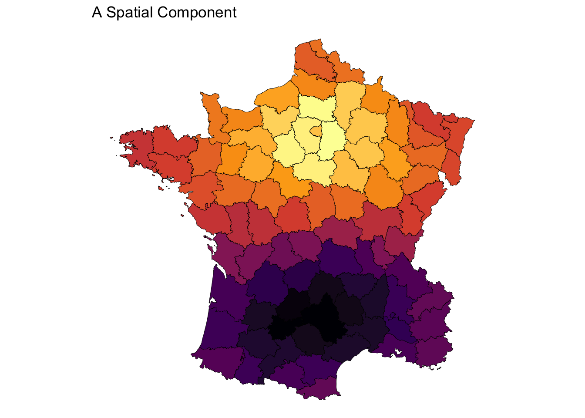

Spatial ML: Predicting on out-of-sample data
3 approaches to using spatially derived features
The incorporation of spatially dependent variables in a machine learning model can greatly improve the model’s performance. These features can include, but not limited to:
- the spatial lag (neighborhood average) of a variable
- counts of neighboring features
- most common category nearby
- spatial embedding via principle coordinate analysis
Deriving spatial features
These kinds of spatial variables are dependent upon the features nearby them. To calculate these variable one needs to have a concept of a neighborhood.
N.B. These neighborhoods are typically found using spatial indices such as R* trees for polygons and lines and KD-trees for point features. These spatial indices make it fast to look up nearby features.
Code
library(sf)
library(spdep)
library(sfdep)
library(spatialreg)
library(ggplot2)
nb <- st_contiguity(guerry)
geoms <- guerry$geometry
pnts <- st_centroid(geoms)
edges <- st_as_edges(guerry$geometry, nb, st_weights(nb))
plot(geoms[c(1, nb[[1]])], main = "A polygon's neighborhood")
plot(edges[edges$from == 1, "geometry"], add = TRUE, col = "blue")
wt <- st_kernel_weights(nb, pnts, "gaussian")
listw <- nb2listw(nb, wt, "B")
# function to do PCOA
pcoa <- function(listw, n_comps) {
m <- scale(as(listw, "CsparseMatrix"), TRUE, FALSE)
irlba::prcomp_irlba(m, n_comps, center = TRUE, scale = TRUE)
}
plot_comp <- function(comp) {
ggplot() +
geom_sf(aes(fill = comp), geoms, color = "black", lwd = 0.15) +
theme_void() +
scale_fill_viridis_c(option = "B") +
theme(legend.position = "none")
}
comps <- pcoa(listw, 5)
plot_comp(comps$rotation[, 1]) + labs(title = "A Spatial Component")

Given an arrangement of features we derive input features from them. For example we use the neighborhood based on contiguity to calculate spatial lags. Or, we use the neighborhoods to create a spatial weights matrix to use as input into a principle coordinate analysis (PCoA) to derive embeddings of spatial relationships.
The Problem
An issue arises when we want to use these models outside of the data that we used to train the model.
How do we incorporate space with out-of-sample data?
There are three approaches we can take, I believe.
- Use the original spatial features to derive the spatial varaibles on the out of sample data.
- Grow the spatial index trees
- Calculate the spatial variables on the context of the new out-of-sample data.
There are issues with each of these approaches.
Using Original Spatial Features for test samples
Let us take the example of the spatial lag. To calculate the spatial lag of a feature outside of our sample, we would need to retain the existing R* and KD trees. This could be memory intensive. The process would be somewhat like this:
- Identify the neighborhood of the new feature
- Calculate the spatial lag of the neighborhood in the context of the training dataset
- Use those variables for prediction
Use case:
One would use this approach when they believe that their training data has covered the complete spatial extent of what they intend to model.
Cons:
This would require storing the spatial indices that were used to create the variables along with the variables that are used. In the case of PCoA, you would need to maintain the loadings so that incoming data can be projected onto it.
Growing the Spatial Feature Space
Another example would be that for the entire out-of-sample dataset we insert it into our spatial index then calculate the neighborhood for each feature. This means that each out-of-sample location can have a neighborhood that consists of features in the original training dataset or the test set.
- Insert out-of-sample features into spatial index
- Identify neighborhood of out-of-sample features
- Calculate spatial lag in the context of both training and testing dataset
- Use those newly calculated spatial variables in the prediction set.
Important:
From this, you can either, keep the newly inserted features in the spatial index so that they are available for later predictions or discard them after having identified your neigborhoods. If you choose the former, it makes the model mutable meaning that the spatial features generated from it would learn from each test set.
Use case:
You would use this approach when the original training data does not cover the complete spatial extent of what is intended to be modeled.
Cons
This would require storing the original spatial indicies and variables that were used to create the spatial variables. Additionally, this would require a mutable spatial index. In the case that the out-of-sample are not retained, the spatial index must be cloned which can be memory intensive depending on the size of it.
Deriving Spatial Variables from the test set
This last approach is the most straight forward. If there are spatial features that are needed for prediction, you generate them entirely from the test dataset. In the case of the spatial lag you would:
- Create a new spatial index for the test set
- Identify the neighborhood of each test feature in the test-set
- Calculate the spatial lag with these features
- Use those newly calculated spatial variables in the prediction set.
Use case:
You would use this approach when the model is intended to predict a specific phenomenon and is ambivalent to the spatial extent. The model is also intended to be predicted upon an entire target spatial extent. For example, the model is trained to detect housing prices in urban areas. The model might be trained on data in California but is intended to be used in urban areas in Ohio, Michigan, Massachusettes, etc.
Cons
Calculating a spatial index can be time-consuming. It would require a test set that covers the entire spatial extent that is intended to be predicted upon. This would not be good for small batch or individual record prediction.